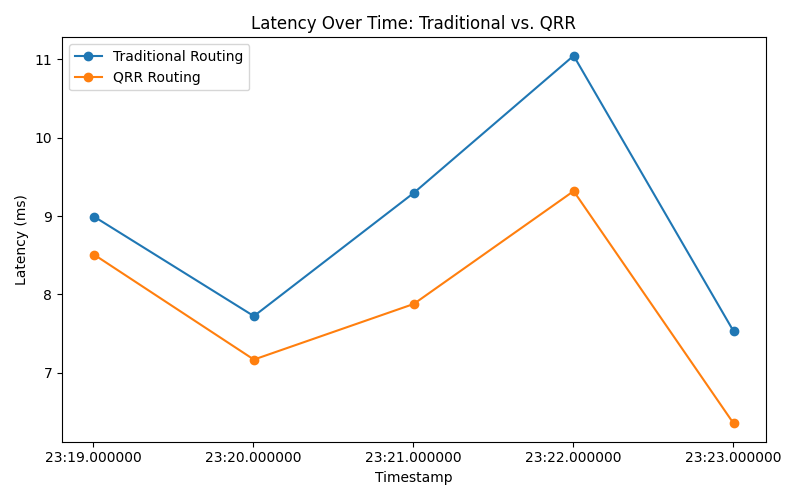

Relational Mathematics for Next-Generation Network Efficiency
Software-only solution
No hardware upgrades required
Traditional routing fails to adapt to modern network complexity
Networks are growing exponentially more complex
Traditional approaches can't keep pace
Intelligent network routing through relationship modeling
Networks are inherently relational—optimize the relationships between nodes, not just the nodes themselves
Real-world simulation with production network characteristics
Comprehensive validation across packet loss, latency, throughput, and network health metrics
Consistent latency advantages under varying network conditions
QRR maintains lower latency throughout network lifecycle
Adaptive routing responds to real-time conditions
Quantifying the business value of network optimization
Annual Network OpEx: $50 million | Customer Base: 500K subscribers at $80/month ARPU
Cost Savings: $7.5-10M annually (15-20% OpEx reduction)
Churn Prevention: $2.4-4.8M annually (5-10% retention improvement)
Total Annual Value: $10-15 Million
Ready to optimize your telecom infrastructure?
Relational Relativity LLC — Optimizing Networks Through Mathematics